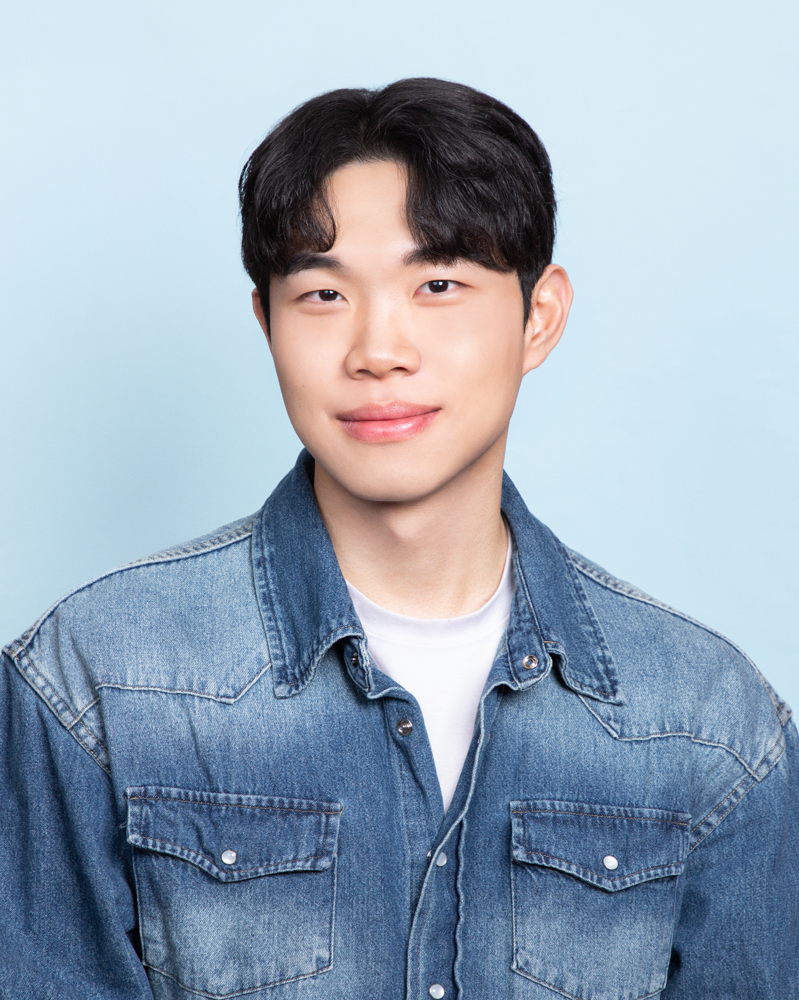

Kim Dongjin
김동진
AI Researcher
Integrated M.S.–Ph.D. Student
KAIST AI · DAVIAN Lab
Kim Dongjin
I am an integrated M.S.–Ph.D. student in the DAVIAN Lab at KAIST AI, advised by Professor Jaegul Choo. My research interests include Vision-Language-Action (VLA), LLM Safety, and various multi-modal learning tasks.
Research Interests
- Vision-Language-Action (VLA)
- LLM Safety
- Multi-modal Learning
- Video Understanding
- Sound Source Localization
News
- Apr 2026 Two papers presented at ICLR 2026 — ExpGuard (co-first author) and LiveWeb-IE.
- Jun 2025 Presented Object-aware Sound Source Localization via Audio-Visual Scene Understanding at CVPR 2025, Nashville, TN.
- Mar 2025 Started Integrated M.S.–Ph.D. program at KAIST AI, DAVIAN Lab, advised by Prof. Jaegul Choo.
- Feb 2025 Paper accepted at AAAI 2025 — Watch Video, Catch Keyword: Context-aware Keyword Attention for Moment Retrieval and Highlight Detection.
- Jun 2024 Presented Learning to Visually Localize Sound Sources from Mixtures without Prior Source Knowledge at CVPR 2024, Seattle, WA.
Publications
2026


2025


2024


Education
-
2025–Present
Integrated M.S.–Ph.D. in Artificial Intelligence
KAIST AI · DAVIAN Lab
Advisor: Prof. Jaegul Choo
Research focus: VLA, LLM Safety, multi-modal learning
-
2019–2025
B.S. in Computer Science & Engineering
Kyung Hee University · Visual AI Lab
Advisor: Prof. Jung Uk Kim
Research focus: Multi-modal learning, Video Understanding, Sound Source Localization
Experience
-
2025.03–Present
Integrated M.S.–Ph.D. Student
DAVIAN Lab, KAIST AI
Research on VLA, LLM Safety, and multi-modal learning.
-
2024.03–2024.08
AI Engineer
LETSUR (AI Startup)
Development of AI-based services utilizing LLMs and RAG.
-
2024.01–2024.02
AI Research Intern
ETRI (Electronics and Telecommunications Research Institute)
Research on Video Moment Retrieval and Highlight Detection.
-
2022.11–2025.02
Undergraduate Researcher
Visual AI Lab, Kyung Hee University
Supervisor: Jung Uk Kim.
Talks & Presentations
-
CVPR 2025
Object-aware Sound Source Localization via Audio-Visual Scene Understanding
[poster] -
CVPR 2024
Learning to Visually Localize Sound Sources from Mixtures without Prior Source Knowledge
[poster] -
ACM MM 2023
Audio-Visual Spatial Integration and Recursive Attention for Robust Sound Source Localization
[poster] -
Invited Talk 2025
"My Experience of CVPR Acceptance as an Undergraduate and Advice for Graduate School"
[slides]